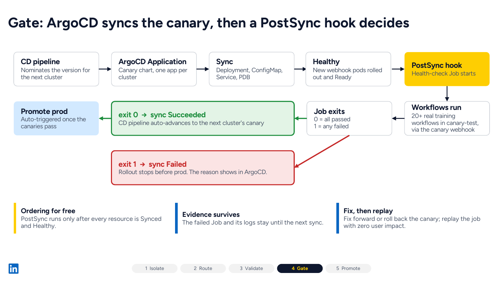

A wave is a label and a gate is a Job: exit 1 stops the rollout before prod.
kind: Job metadata: name: prometheus-gate annotations: argocd.argoproj.io/hook: PostSync spec: backoffLimit: 0 template: {spec: {containers: [{ image: gates/prometheus:1.4, args: [--targets-up=99%, --for=15m]}]}} # exit 0: the next wave starts. exit 1: it stops.

1 week → 1 hourper release, auto-validated
10+incidents caught before prod
To check: RollingSync’s controller flag, and that a failed hook halts it. Argo CD won’t roll back; the revert is one commit.